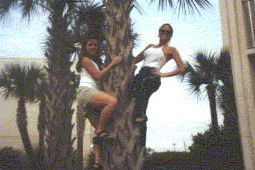

Brenda Bills

Panama City Palm
The Palm tree that one sees around the
landscaping in Panama City Beach, Florida is the
Bismarkia Nobilis. A guess at the tree's circumference
is 85 inches and this particular tree is located at
the Howard Johnsons in Panama City Beach, Florida.
Palm trees can grow up to 20 meters and this one was
around 12 meters high so it is difficult to determine
its age. I really like the look of Palm trees and I
chose this tree because one year a friend of mine
dared me to try to climb a Palm Tree on spring break.
In doing so, one of my roommates took a picture on my
camera without me knowing it. It was so memorable and
funny at the time, that now I climb a Palm tree and get
a picture taken every beach trip. Something
interesting that I had only learned this summer is
that the bark on a Palm Tree are actually the dried
leaves that have been trimmed. And in tourist areas
you will see the bark trimmed so closely that it
appears smooth and only towards the top of the tree
you can see the dried spike-like leaves.
-Brenda Bills
© Brenda Bills
"Panama City Palm"
Common Name: Palm Tree
Latin Name: Bismarkia nobilis
Circumference: approx 85 inches
Location: Panama City Beach, Florida USA
 Return to Main Page
Return to Main Page
Comments
Please send e-mail to: June Julian
jj68@nyu.edu